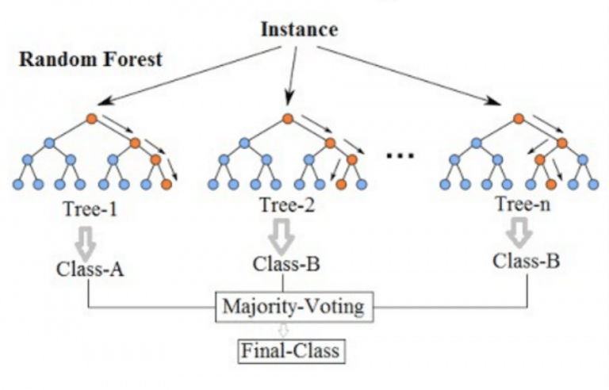

Random Forest
Principe (Random Forest)
La méthode Random Forest est un ensemble d’arbres de décision construits sur des sous-échantillons aléatoires des données et des variables.
Chaque arbre vote, et la classe majoritaire est prédite :
L’agrégation réduit la variance et améliore la robustesse.
Avantages : robuste, gère les variables catégorielles, peu sensible au surapprentissage.
Limites : moins interprétable, plus lent qu’un arbre de décision unique.
Illustration (Random Forest)
{kind=link}
Exemple illustré (Random Forest)
Imaginons un ensemble de 3 arbres de décision, chacun construit sur un sous-échantillon différent des données. Pour une nouvelle observation, chaque arbre prédit une classe (par exemple 0, 1, 1). La classe finale prédite par la forêt est la classe majoritaire, ici 1.
Pour aller plus loin (Random Forest)
Documentation scikit-learn : https://scikit-learn.org/stable/modules/ensemble.html#random-forests
Article Wikipedia : https://fr.wikipedia.org/wiki/For%C3%AAt_d%27arbres_d%C3%A9cision